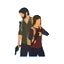
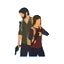

El remake de The Last of Us añadió muchas cosas que el juego original del 2013 no tenía, pero lo hizo con tan buena calidad que no alteró la historia y mucho menos su esencia.
El apartado visual recibió grandes mejoras en los gráficos, que fueron increíblemente mejorados, ofreciendo una calidad visual que solo es comparable con su fascinante historia. Para este remake, todos los modelos y escenarios fueron reinventados desde cero, con mejores texturas, mayor detalle en las mallas de los objetos, viéndose el mayor salto de calidad en el pelo de los personajes y animales.
Gran parte de estos cambios en la calidad visual se atribuyen a un cambio de motor que realizó Naughty Dog (la empresa desarrolladora del juego, original y remake), pasando de Havok a su más nuevo motor gráfico propio de Playstation 5. Este cambio permitió también incorporar una de las mayores tecnologías del renderizado, el trazado de rayos por hardware (también llamado raytracing).
El comportamiento de los personajes no jugables (NPCs) y enemigos tuvo un gran salto, haciéndolos menos torpes y más estratégicos en los combates. Además, su actitud pasiva (cuando no te están atacando) se siente más natural.
Se agregaron nuevas animaciones de pelea y las antiguas fueron rediseñadas completamente para una mayor inmersión. Por ejemplo, se agregó una acción que permite esquivar golpes si oprimes el botón adecuado JUSTO antes de ser golpeado. Los controles generales fueron reajustados de forma que sean más cómodos y precisos.
Otra mejora de combate se relaciona con la necesidad de crear estrategias diferentes e improvisarlas en cada combate, ya que las posiciones de los enemigos varían en cada intento de un combate. Esto quiere decir que si mueres y reinicias un combate todo será diferente. Sin embargo, ahora puedes volarle las piernas a los infectados (con casi cualquier arma) para que tengan que arrastrarse y, por consiguiente, no sean tan peligrosos al bajar drásticamente su velocidad de movimiento.
Nuevos diálogos fueron agregados de forma aleatoria. La mayoría de estos diálogos pueden ser escuchados al interactuar con un personaje acompañante en un momento o situación particular del juego.


 
